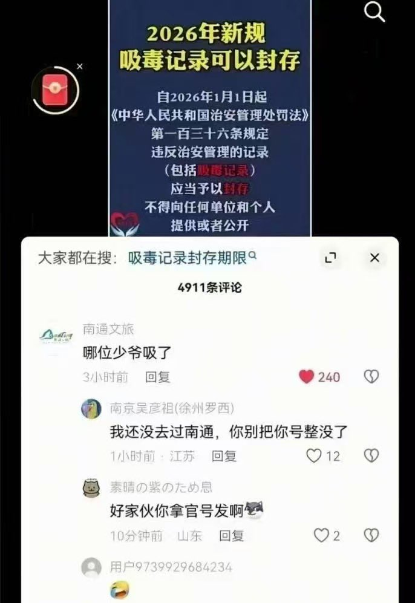
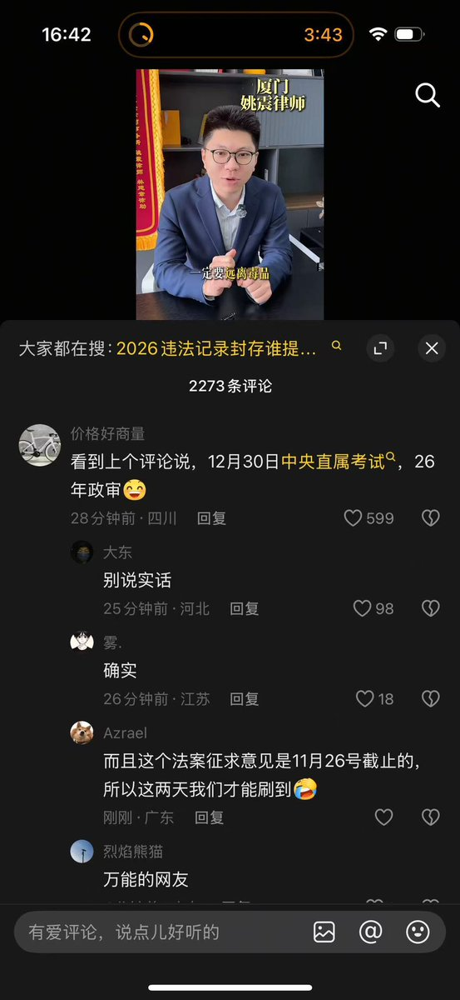

Minokakay
@Minokakay
基本盘还是太没想象力了，老爷吸毒能被你民警抓了？能被强制戒毒？能被写进档案？小少爷想当个小官还需要考？还需要政审和无案底？
真正的官老爷及其亲属吸了毒被民警抓了打个电话给他们上级就给放了，敢抓少爷是要丢工作的，根本不可能有案底，规则都是人家定的你在这谈规则？


小蛋糕（日本勇者村）
@leocherry8
2026年新规：吸毒记录可以封存
12月30日，中央直属考试，26年政审
大家看懂了吗😆
此处应有掌声👏👏👏 https://t.co/4tfxYD7xKY